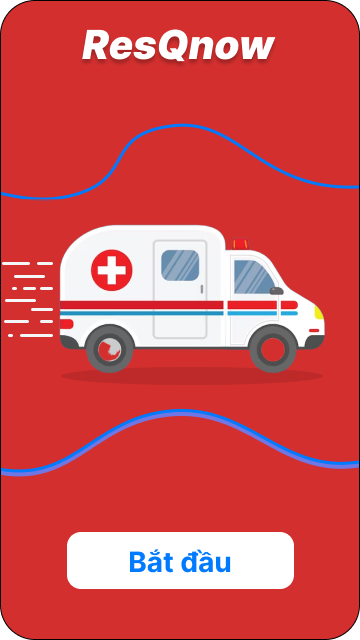

Ứng dụng hỗ trợ cấp cứu tức thì
Kotlin
AppResQnow là một ứng dụng di động được phát triển trên nền tảng Android, tập trung vào việc cung cấp dịch vụ khẩn cấp cho người dùng. Ứng dụng được thiết kế theo kiến trúc Client-Server, sử dụng Firebase làm backend và Google Maps API cho các tính năng định vị. Về mặt kiến trúc, ứng dụng được chia thành ba lớp chính: Presentation Layer (UI), Business Logic Layer và Data Access Layer. Presentation Layer được xây dựng bằng cách sử dụng các công nghệ frontend phù hợp để tạo giao diện người dùng thân thiện theo Material Design. Business Logic Layer xử lý các logic nghiệp vụ như quản lý người dùng, xử lý tín hiệu khẩn cấp và quản lý thông báo. Data Access Layer tương tác với Firebase Realtime Database để lưu trữ và truy xuất dữ liệu.

Hệ thống bao gồm các module chính như xác thực người dùng, quản lý khẩn cấp, bản đồ và định vị. Module xác thực người dùng sử dụng Firebase Authentication để quản lý đăng ký, đăng nhập và khôi phục mật khẩu. Module quản lý khẩn cấp xử lý việc gửi tín hiệu khẩn cấp, theo dõi trạng thái và cập nhật vị trí người dùng. Module bản đồ và định vị tích hợp Google Maps API để hiển thị bản đồ, định vị người dùng và tính toán khoảng cách. Dữ liệu được tổ chức thành các collection trong Firebase, bao gồm Users, Emergencies, Locations và Notifications.
Về mặt bảo mật, hệ thống sử dụng JWT Authentication và Firebase Authentication để xác thực người dùng, kết hợp với mã hóa dữ liệu và bảo mật API. Hiệu suất được tối ưu hóa thông qua việc sử dụng lazy loading, caching và tối ưu hóa hình ảnh. Quy trình xử lý khẩn cấp được thiết kế để đảm bảo phản hồi nhanh chóng, bao gồm các bước: nhận tín hiệu khẩn cấp, xác định vị trí, gửi thông báo và cập nhật trạng thái. Hệ thống cũng được tích hợp với các dịch vụ bên ngoài như Google Maps API và Firebase Services để cung cấp các tính năng nâng cao.Ứng dụng được phát triển với mục tiêu đảm bảo tính ổn định, bảo mật và hiệu suất cao, đồng thời dễ dàng mở rộng và bảo trì trong tương lai. Các thành phần được tích hợp chặt chẽ với nhau để tạo ra một ứng dụng hoàn chỉnh, đáp ứng nhu cầu của người dùng trong các tình huống khẩn cấp.